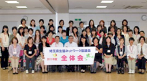

|
|
全体会に先立って、「世界が平和に向かうために」～ジャーナリストの目をとおして～と題して、ジャーナリストの後藤健二氏によるスキルアップ応援講座を行いました。 ■全体会  １．埼玉県生協連の伊藤恭一会長理事より、2011年度の体制について５月19日の埼玉県生協連理事会で滝澤玲子さんが会長に推薦されたことが報告されました。また、「運動は思いや願いを広げる事、広がれば思いが実現します。参加者が増える事は運動が活発になり大変嬉しい事です。生協ネットワーク協議会も、交流し輪を広げてますます活発に活動をすすめてください。」とあいさつされました。 ２．協議会メンバーの自己紹介(自分の好きな漢字２文字の言葉を発表)を行いました。 ３．滝澤会長より｢生協ネットワーク協議会がめざすもの｣と設置要綱の確認が行われました。 ４．事務局より2010年度の活動のまとめと、会計の報告が行われました。 ５．滝澤会長より、2011年度の活動計画と総合テーマは引続き｢広く地域の中でつながりあうために｣とし、学習や交流活動をしていくことが提案され確認されました。 |